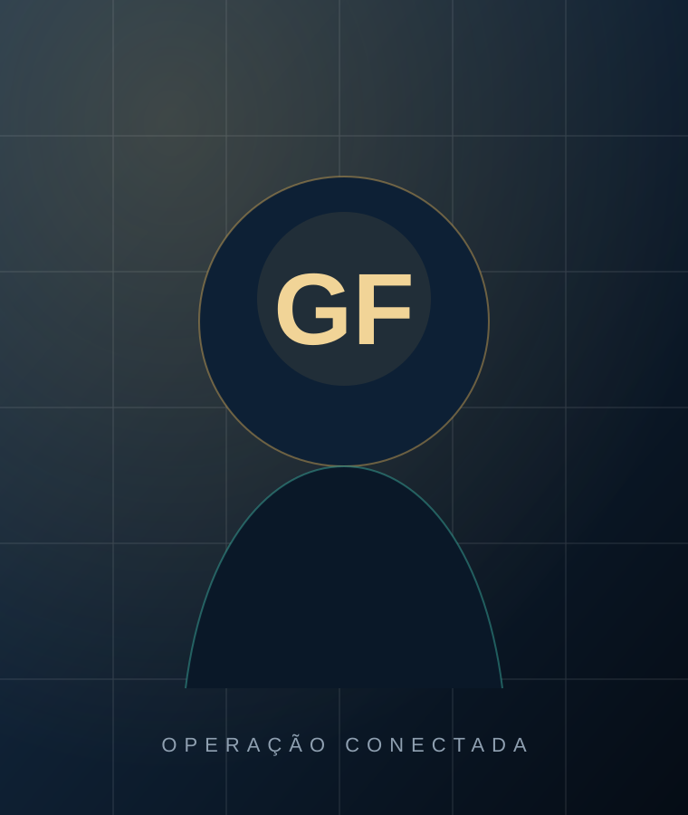

Parceiro LeverPro
Operação Conectada para construção e logística
Do sistema instalado à operação funcionando.
Conectamos processos, ERP, WMS, dados, pessoas e governança para reduzir retrabalho, aumentar o controle e transformar tecnologia em resultado operacional.
Resultados e escopos vinculados à trajetória profissional de Gustavo Farias; o impacto varia conforme o contexto de cada operação.
A dor que custa mais do que parece
A empresa investiu em tecnologia, mas ainda opera por fora dela?
O desperdício aparece na rotina antes de chegar ao relatório financeiro.
Processos críticos fora do ERP
Planilhas, mensagens e anotações continuam controlando atividades essenciais.
A mesma informação digitada várias vezes
Áreas e sistemas não compartilham uma fonte confiável e padronizada.
Gestão sem confiança nos números
A liderança precisa conferir o relatório em outra fonte antes de decidir.
Dependência de pessoas específicas
O conhecimento está concentrado em quem “já sabe fazer”.
Como atuamos
Quatro pilares. Uma única operação.
A tecnologia deixa de ser uma coleção de ferramentas e passa a funcionar como parte da gestão.
Processos e operação
AS IS, TO BE, gargalos, responsabilidades, aprovações, requisitos e padronização da execução.
- BPMN e fluxos
- Matriz RACI
- Regras de negócio
Sistemas e governança
ERP, WMS, acessos, fornecedores, integrações, testes, homologações, custos e mudanças.
- PMO de sistemas
- Critérios de aceite
- Gestão de fornecedores
Dados e indicadores
Qualidade da informação, regras de cálculo, BI, automações, alertas e rotinas de decisão.
- Power BI e SQL
- Dicionário de KPIs
- Automação e IA
Pessoas e adoção
Treinamentos orientados à regra de negócio, documentação, suporte e acompanhamento da adesão.
- Trilhas de aprendizagem
- Universidade corporativa
- Gestão da mudança
Metodologia proprietária
Método Conecta.
Estratégia, operação, sistema, dado e usuário tratados como partes de uma mesma transformação — com critérios claros, entregáveis e acompanhamento.
Direção, objetivos, dores, riscos e decisões críticas.
Rotina, usuários, planilhas, aprovações e desvios.
Cadastros, fontes, papéis, padrões e critérios.
TO BE, prioridades, riscos, custos e benefícios.
Configuração, integração, teste, homologação e entrega.
Capacitação, materiais, suporte e gestão da mudança.
Indicadores, adesão, benefícios e melhoria contínua.
Jornada de contratação
Entender. Transformar. Sustentar.
A contratação começa no nível de maturidade e urgência da sua operação.
Diagnóstico Executivo Conecta
Identifica causas, riscos, prioridades e oportunidades antes de qualquer investimento maior.
- Entrevistas e leitura da operação
- Mapa de processos e sistemas
- Matriz de riscos e oportunidades
- Roadmap executivo priorizado
Programa Conecta
Implanta as melhorias priorizadas, conectando processo futuro, sistema, dados, treinamento e governança.
- Desenho e implantação do TO BE
- Requisitos, testes e homologação
- Indicadores, integrações e automações
- Treinamento e gestão da mudança
PMO de Sistemas Fracionado
Mantém a governança e a visibilidade executiva sobre projetos, demandas, custos e fornecedores.
- Portfólio e prioridades
- Gestão de fornecedores
- Rituais executivos e indicadores
- Melhoria contínua
Experiência em ambientes reais
Conhecimento técnico com leitura da operação.
Selecione um contexto para visualizar desafio, atuação, valor aplicado e tecnologias.
Transparência profissional: as marcas representam empresas e ambientes nos quais Gustavo Farias participou ou liderou iniciativas. Isso não significa, necessariamente, contratação direta da Cruz & Farias Consultoria.
PARCERIA ESTRATÉGICA
Cruz & Farias
×
LeverPro
Parceiro LeverPro
Ecossistema de entrega
Mais capacidade para transformar diagnóstico em execução.
A Cruz & Farias é parceira da LeverPro. A parceria fortalece uma atuação complementar para conectar estratégia, processos, sistemas, dados, implantação e evolução contínua.
Competências combinadas de acordo com o desafio e o contexto do cliente.
Mais estrutura para conduzir projetos com governança, clareza e acompanhamento.
Diagnóstico operacional traduzido em requisitos, implantação e resultado.
Parcerias utilizadas para complementar a entrega, sem perder a visão integrada.

ESPECIALISTA EM OPERAÇÃO CONECTADA
Gustavo Farias
Fundador da Cruz & Farias Consultoria
Sobre a liderança da consultoria
Negócio, operação e tecnologia na mesma conversa.
Gustavo Farias possui experiência prática em construção civil, logística, ERP, WMS, dados, governança, treinamento e condução de mudanças.
Leitura da operação real
Entendimento do trabalho praticado por usuários e gestores — não apenas do processo desenhado.
Capacidade técnica e executiva
Integra sistemas, processos, indicadores, fornecedores, riscos e prioridades.
Condução da mudança
Traduz decisões em execução e prepara as pessoas para sustentar o novo modelo.
Operação Conectada
Conteúdo para quem precisa fazer a tecnologia gerar resultado.
Ideias construídas a partir de situações reais de processo, sistema, dados, implantação e gestão.
ERP E PROCESSOS
A empresa paga pelo ERP, mas a operação continua no Excel.
Como identificar quando o controle paralelo deixou de ser apoio e virou risco.
Ler no LinkedIn → WMS NA PRÁTICAO estoque começa a ficar errado antes do inventário.
Recebimento, cadastro, armazenagem e expedição explicam a divergência final.
Acompanhar no Instagram → DIAGNÓSTICOAntes de trocar o sistema, entenda a operação.
Um roteiro para identificar retrabalho, riscos, dependências e prioridades.
Avaliar minha operação →Próximo passo
Antes de investir em outra ferramenta, descubra onde sua operação realmente perde valor.
Em aproximadamente 7 minutos, avalie sinais de retrabalho, controles paralelos, baixa utilização dos sistemas e fragilidade das informações.